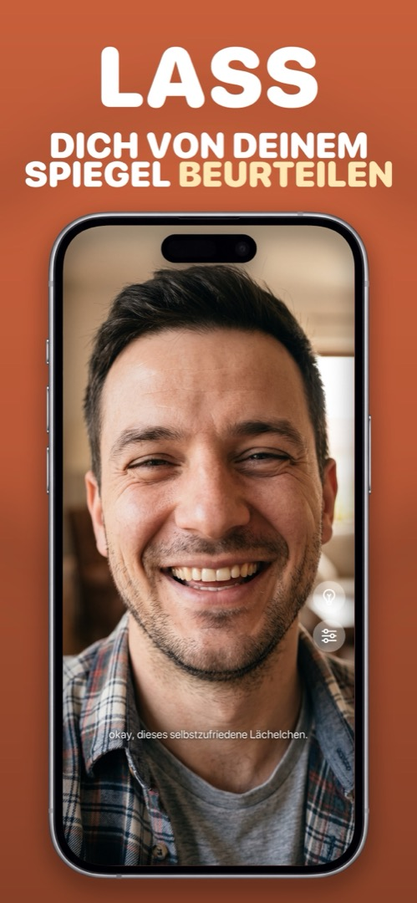

Taschenspiegel vergessen? Nimm den, der schon in deiner Tasche steckt
Du greifst in die Tasche, und der Taschenspiegel ist nicht da. Er liegt im Bad oder steckt in der anderen Jacke. Hier ist, was funktioniert, wenn du jetzt sofort einen Spiegel brauchst — sortiert von verzweifelt bis wirklich gut.
Improvisierte Spiegel im Ranking
- Der dunkle Handybildschirm. Handy sperren und neigen. Funktioniert nur bei hellem Licht vor dunklem Hintergrund. Note: Notfall.
- Schaufenster oder Autoscheibe. Okay für Haare und Outfit, hoffnungslos für Details — und du machst es in der Öffentlichkeit.
- Der Spiegel in der Sonnenblende. Brauchbar, wenn du im Auto sitzt. Meist winzig und unbeleuchtet.
- Sonnenbrillenglas. Gewölbt, dunkel, verzerrt. Immer noch besser als nichts.
- Die Frontkamera deines Handys in einer Spiegel-App. Groß, beleuchtet, zoombar, schon in der Tasche. Das ist die Antwort.
Handy vs. Taschenspiegel
Wer die Frontkamera einmal als Spiegel benutzt hat, sieht den Taschenspiegel plötzlich als Kompromiss. Der Handybildschirm ist größer als jeder Taschenspiegel, beleuchtet sich selbst, vergrößert, zerbricht nie in der Tasche — und ist der eine Gegenstand, den du wirklich nie vergisst.
Das Einzige, was ein Taschenspiegel kann und die Kamera-App nicht: keine Fotos machen. Genau das ist der Unterschied zwischen Kamera-App und Spiegel-App: Eine Spiegel-App hat keinen Auslöser und speichert nie etwas — du kannst zwanzigmal am Tag die Zähne prüfen, ohne eine Mediathek voller Beweise.
So geht's in Mirrorly
Mirrorly ist der Taschenspiegel, den du nicht liegen lassen kannst. So nutzt du ihn:
- Mirrorly öffnen. Ab dem Start ein Vollbild-Spiegel.
- Bei schlechtem Licht auf die Glühbirne tippen; für Zähne oder Brauen zoomen.
- Schließen und weitermachen. Kein Foto, kein Konto, nichts hochgeladen.

Mirrorly gibt es kostenlos zum Ausprobieren im App Store. Ein Vollbild-Spiegel fürs iPhone mit Ringlicht, Zoom und maximaler Helligkeit. Drei kostenlose Checks, danach ein einmaliger Kauf — kein Abo, keine gespeicherten Fotos, kein Konto, keine Werbung.